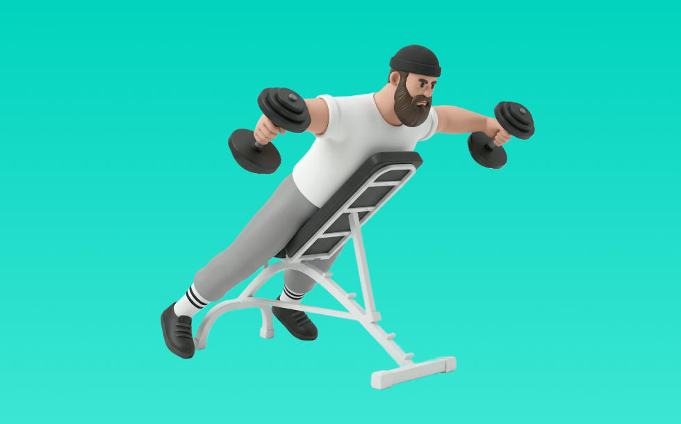

リバースフライ

リバースフライとは、ダンベルを使って「腕を開いて閉じる」動作で背中（広背筋、僧帽筋、菱形筋）＋腕（上腕二頭筋）を鍛える種目です。可動域が広く、左右のバランスを整えやすいのが特徴で、反動を抑えてコントロールしながら反復します。背中の厚み・広がり作りや姿勢改善が期待できます。
- 対象部位
- 背中
- 器具
- ダンベル
- 記録形式
- 重量・回数
- 別名
- リアフライ
YouTube動画
-
FITWEL リバースフライ（テクノジム）
-
引き締まった背中を手に入れる！ 効果抜群のエクササイズ！！
-
How to do a Dumbbell Reverse Fly
-
【筋トレ悪いフォーム解説】リアデルトフライでよくある間違い解説！三角筋後部狙いはこう鍛える！
-
姿勢改善と美しい背中を作る！リバースフライ
-
ダンベルで背中を鍛える筋トレ！広背筋・僧帽筋に効く
-
チューブでリバースフライ 本気の！チューブトレーニング講座第四回
-
【初心者】リアレイズの正しいやり方 | 肩の後ろ側に効きまくる【ビーレジェンド プロテイン】
-
【BODYBOSS公式】ケーブルリバースフライの説明動画
YouTubeショート
-
神戸北町スポーツクラブVivo【リバースフライ】マシン使い方
-
【テクノ】リバースフライ
-
リバースダンベルフライ（初速）
-
【ダンベルフライ正しいやり方】理想と間違い #筋トレ #ボディメイク #ボディビル #プロテイン #tryve #ボディメイク
-
ばちばちに効く肩のリア種目
-
ペックフライのフォームについてです✨
-
ケーブルリバースフライ（Cable Reverse Fly）のやり方とフォーム
-
リアデルトフライの正しい使い方｜肩と背中を引き締める！💪🦅
-
【肩トレ解説】リアデルトイド #筋トレ解説 #肩トレ #肩トレーニング
-
正しいダンベルフライ4つのポイント #筋トレ
-
【30秒でわかる】リアレイズ解説
-
正しいダンベルロウ4つのポイント #筋トレ
-
簡単に背中が鍛えられちゃう3種目はコレだ。#shorts
-
正しいサイドレイズ4つのポイント #筋トレ
-
【IFBB PRO 上里選手】筋トレ初心者必見!!背中種目で注意すべきこと
-
【背中・肩の筋トレ】ダンベルリバースフライの正しいやり方！
-
リアレイズのやり方#ジム #初心者 #ダンベル
-
ペックフライの使い方これで合ってる！？ #フィットネスジム #ジム #筋トレ #ダイエット #マッスル #エクササイズ #ボクササイズ #24時間ジム #ペックフライ
-
【筋トレ】ペックフライのやり方＃筋トレ＃筋肉＃ペックフライ＃胸トレ#chesttraining g
-
【背中トレ解説】ダンベル・シュラッグ #筋トレ解説 #背中トレ #背中トレーニング
-
【初心者さん注意】リアレイズで三角筋が効かない間違ったフォーム！ #筋トレ
-
背中を最大限に鍛える種目3選【筋トレ】
-
背中が成長しないラットプルダウン
-
【ダンベル】背中トレ4選 #筋トレ
-
女性に大人気の【二の腕トレ】 キックバックのやり方 #Shorts #宅トレ#筋トレ
-
ダンベルだけで背中をデカくする筋トレ💪
-
持田選手の教える怪我をしないためのリアレイズがこちら！！#トレーニング #筋トレ #volix #fitness #workout #肩トレ #リアレイズ
-
個人的に最も効果のある背中の種目3つを紹介 #筋トレ #フィットネス
-
1分でわかる！背中トレ🦋149cmトレーナー
-
最大ストレッチと収縮はケーブル一択
-
細マッチョの胸トレはベンチプレスだけで十分🏋️ #筋トレ #宅トレ #細マッチョ
-
Reverse Fly T ﾘﾊﾞｰｽﾌﾗｲ T
-
肩トレのやり方🔥 〜リアに効かせるトレーニング基礎編〜 #筋トレ #筋肉社長 #筋肉 #肩トレ
-
正しいダンベルベンチプレス5つのポイント 【筋トレ】
-
胸トレ1種目しかできないならどっち？ #山本義徳 #shorts
-
正しいラットプルダウン4つのポイント【筋トレ】
-
ダンベル・リバースフライ
-
背中が成長しないベントオーバーロウ #筋トレ
-
【筋肉つかない】自重トレ3種目 #自重トレーニング #筋トレ #フィットネス
-
美しいデコルテラインへ！～ダンベルフライの正しいフォーム～ #byzoomfitness #バイズーム #フィットネスをもっとオシャレに #筋トレ女子 #筋トレ #ダンベルフライ #デコルテ
-
インクラインダンベルフライを上手く効かせる方法 #筋トレ #胸トレ #トレーニング #workout #ホームトレーニング #ホームトレーニー #fitness #training
動作方法
- 体幹を安定させ、背中が丸まらない姿勢を作る
- 肘を後方へ引き、肩甲骨を寄せる
- 勢いを使わず、ゆっくり戻す
動作ポイント
- 背中を丸めない
- 首に力を入れすぎない
- 戻しを速くしすぎない
ワンポイントアドバイス
- 腕ではなく背中で引く感覚を優先する
- 反動が増えたら重量を一段下げる
目的別回数設定
目的や体力に応じた一般的な目安です。無理のない範囲で調整してください。
- 筋力アップ
- 1〜5回
- 筋肥大
- 6〜12回
- 持久力アップ
- 13〜20回
YouTube動画について
動画はYouTubeの公開情報をもとに表示しています。内容は投稿者によるもので、Biggrによる監修ではありません。
アプリを入手
筋トレやトレーニングの記録はBiggrにお任せください。今すぐ無料で使い始められます。